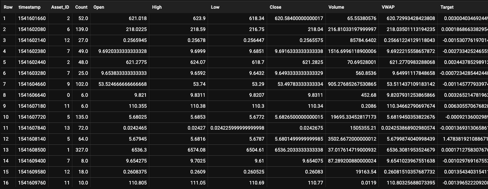
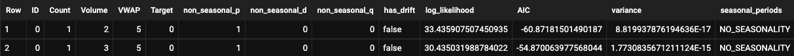

Forecasting Price of Cryptocurrency
Course
MGMT 382 [Management of Information Systems]
Purdue University - West Lafayette
Date
12/01/2021
Project Description
This project was a final team project for MGMT 382, Mamagement of Information Systems at Purdue University. The purpose of this project was to create a model that can forecast the future price of the cryptocurrency.
Software used
- Google Cloud Platform & Big Query
Training Dataset
Our dataset came from the Kaggle Competition, G-Research Crypto Forecasting, a competition for predicting real crypto market data. As shown in the photo below, training dataset were TimeSeries data, data points that are indexed in time-order, containing various features such as: timestamp, ASSET_ID, Count, Open, High, Low, Close, Volume etc. It contained 10 different types of cryptocurrency, but due to limits in number of data we can process through Google Cloud Platform as student account, we only focused on one type of cryptocurrency, Binance coin. 
Model
My main role was to research which type of models to use and creating it based on previous researching.
In order to improve overall performance, we chose ARIMA Model(Autoregressive integrated moving average Model), because
ARIMA model uses time series data to predict future trends based on lags of the dependent variable and lags of forecast variable.
The features we to train our models are:
- Asset_ID
- Count
- Volume
- VWAP: The volume weighted average price for the minute
- Target: Residual log-returns for the asset over a 15 minute horizon
Simply, the loagarithm of the ratio between tow consecutive prices
Result
Table below shows the evaluation metrics for two models generated as a result of creation of ARIMA model. Log_likelihood describes the joint probability of the observed data. Our data's Log_likelihood is positive, therefore we can infer from this that our model's probability in accuracy is somewhat high. The Akaike information criterion(AIC) is an estimator of prediction error. Lower AIC values indicate a better fit model. Therefore our better-fit model is the first model among the two. Limitation
As our team was using student account for google cloud storage, we were limited to maximum of 10000 dataset points. Therefore, although our initial plan was to predict all 10 types of cryptocurrency, we were only able to create model for binance coin. Still, processing 10000 data points for binance coin was not enough to make accurate prediction of the current price as 10000 data points only included price of binance coins in 2018, which makes it difficult to predict current price.BigQuery Script
#standardSQL
CREATE OR REPLACE MODEL `mgmt-382-project-3-team-10.Cryptocurrency.arima_model`
OPTIONS (
model_type = 'ARIMA_PLUS',
time_series_timestamp_col = 'Date',
time_series_data_col = 'Price',
time_series_id_col = ['ID', 'Count', 'Volume', 'VWAP', 'Target'],
auto_arima_max_order = 5
) AS
SELECT
t.Asset_ID AS ID,
DATE(TIMESTAMP_SECONDS(t.timestamp)) AS Date,
t.Close AS Price,
CAST(t.Count AS INT64) AS Count,
CAST(t.Volume AS INT64)AS Volume,
CAST(t.VWAP AS INT64) AS VWAP,
CAST(t.Target AS INT64) AS Target
FROM `mgmt-382-project-3-team-10.Cryptocurrency.train` AS t
GROUP BY Date, t.Asset_ID, t.Close, t.Count, t.Volume, t.VWAP, t.Target
ORDER BY t.Asset_ID
LIMIT 10000